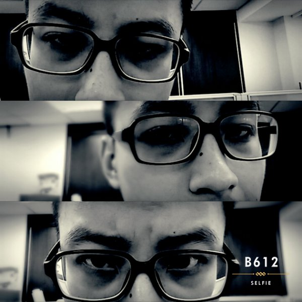
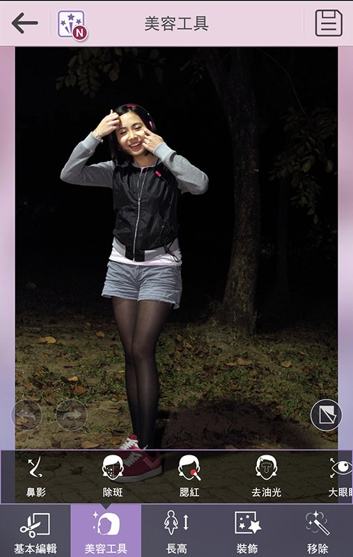
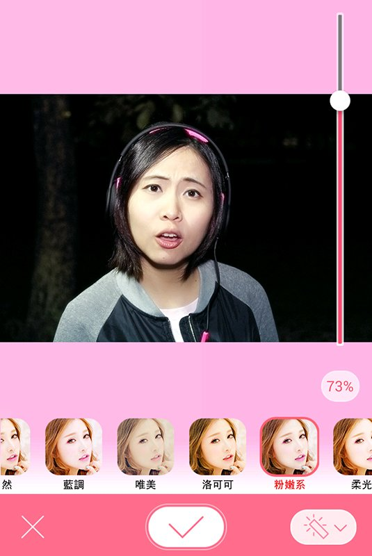
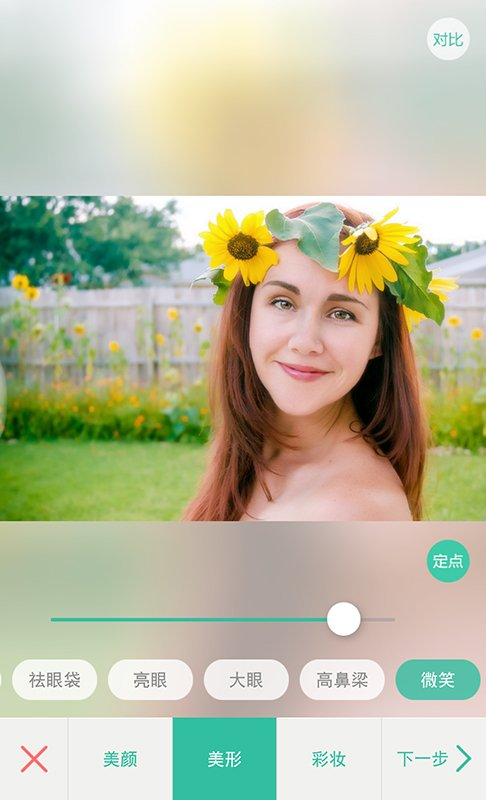
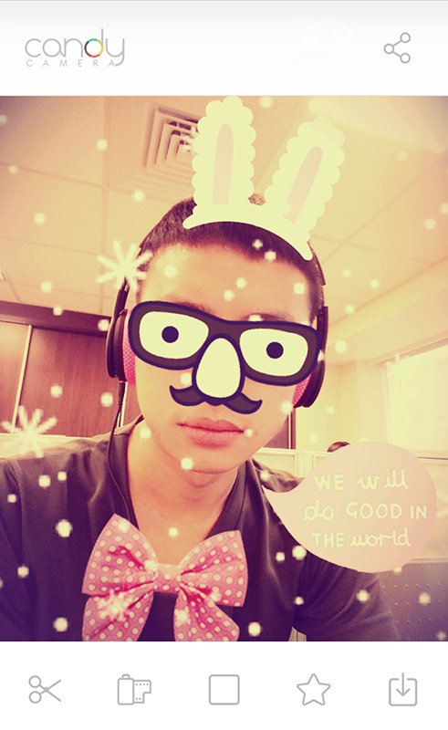

|  | B612 | |
| 如果要找一款專門自拍的APP，絕對就是LINE出品的這款「B612」了！開啟後就是拍攝畫面，最大的特色就是只能使用前鏡頭，真正的為自拍而生！利用上下滑動切換照片拼貼方式，以及左右滑動切換濾鏡，功能雖然簡單，但以光線和色彩的變化，拍攝出來的照片... | ||
| See more... |
|  | 玩美相機 | |
| 若你堅信只有將照片調整至完美，才能展現最棒的效果的話，這款「玩美相機」就拿來當作主力自拍APP吧！擁有精準的臉部與身體追蹤技術，拍攝後可以快速進行美肌、去斑、大眼睛、去油光、瘦臉、長高、高鼻樑等超多細節調整，不但操作方式直覺簡單... | ||
| See more... |
|  | 美顏相機 | |
| 與玩美相機不同，美顏並不強調操控細項，僅著重在濾鏡程度的調整，來達到肌膚美化的效果。在一開始拍攝時，除可以選擇喜好的濾鏡，拍攝時也可以開啟動態特效，像是點點螢光、紛飛的櫻花、或是飄揚的愛心，透過添加夢幻元素，來讓照片更為有趣！拍攝後可... | ||
| See more... |
|  | POCO美人相機 | |
| 擁有強大美肌功能的「POCO美人相機」，可以調整的部分又更多了一些，像是可以選擇肌膚色澤為自然、亮白、水透彈，或是要瓜子臉、錐子臉、鵝蛋臉，這款APP提供的可微調項目更為豐富！如果你覺得笑容不夠，你也可以調整你的微笑程度。此外與其他... | ||
| See more... |
|  | Candy Camera | |
| 假使對於美好肌膚、動人的光線、和諧的色調感到疲乏，想要試試更多有趣的拍攝效果，那麼這款兼具品質與創意的「Candy Camera」絕對是個好選擇。擁有大量特色風格的貼紙、相框、濾鏡，其中圍繞著「糖果」這個名稱，極大多數的元素都是都是以可愛風格為... | ||
| See more... |